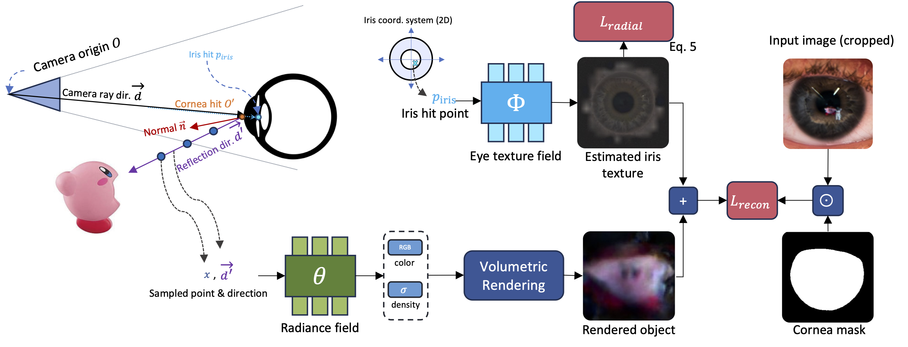

Abstract
The reflective nature of the human eye is an underappreciated source of information about what the world around us looks like.
By imaging the eyes of a moving person, we can collect multiple views of a scene outside the camera's direct line-of-sight through the reflections in the eyes. In this paper,
we reconstruct a 3D scene beyond the camera's line-of-sight using portrait images containing eye reflections.
This task is challenging due to 1) the difficulty of accurately estimating eye pose and 2) the entangled texture of the eye iris and the scene reflections.
Our method jointly refines the cornea poses, the radiance field depicting the scene, and the observer's eye iris texture. We further propose a simple regularization prior on the iris texture pattern to improve reconstruction quality.
Through various experiments on synthetic and real-world captures featuring people with varied eye colors, we demonstrate the feasibility of our approach to recover 3D scenes using eye reflections.
How we did it?
The cornea geometry is approximately the same across all healthy adults. Because of this fact, if we count the pixel size of a person's cornea in the image, we can compute exactly where their eyes are. Using this insight, we train the radiance field on the eye reflections by shooting rays from the camera, and reflecting them off the approximated eye geometry. To remove the iris from showing up in the reconstruction, we perform texture decomposition by simultaneously training a 2D texture map that learns the iris texture.

However, approximating the eye pose just from the image is always very noisy. To address this issue, we perform eye pose optimization which is critical for performance as we show below.